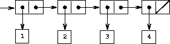
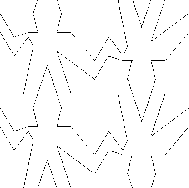
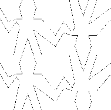
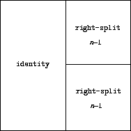
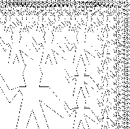
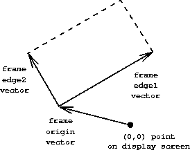

|
Como vimos, os pares fornecem uma “cola” primitiva que podemos usar para construir objetos de dados compostos. A figura 2.2 mostra uma maneira padrão de visualizar um par - nesse caso, o par formado por (cons 1 2). Nesta representação, chamada notação de caixa e ponteiro, cada objeto é mostrado como um ponteiro para uma caixa. A caixa para um objeto primitivo contém uma representação do objeto. Por exemplo, a caixa de um número contém um numeral. A caixa para um par é na verdade uma caixa dupla, a parte esquerda contendo (um ponteiro para) o car do par e a parte direita contendo o cdr.
Já vimos que cons podem ser usados para combinar não apenas números, mas também pares. (Você fez uso desse fato, ou deveria ter, ao fazer os exercícios 2.2 e 2.3). Como consequência, os pares fornecem um bloco de construção universal a partir do qual podemos construir todos tipos de estruturas de dados. A figura 2.3 mostra duas maneiras de usar pares para combinar os números 1, 2, 3 e 4.
|
 |
A capacidade de criar pares cujos elementos são pares é a essência da importância da estrutura de lista como uma ferramenta representacional. Nos referimos a essa capacidade como a propriedade de fechamento dos cons. Em geral, uma operação para combinar objetos de dados satisfaz a propriedade de fechamento se os resultados da combinação de itens com essa operação puderem ser combinados usando a mesma operação.6 O fechamento é a chave do poder em qualquer meio de combinação, pois nos permite criar estruturas hierárquicas – estruturas compostas de partes, que são compostas por elas peças e assim por diante.
Desde o início do capítulo 1, fizemos um uso essencial do fechamento para lidar com procedimentos, pois todos os programas, exceto os mais simples, se baseiam no fato de que os elementos de uma combinação podem ser combinações. Nesta seção, abordamos as consequências do fechamento para dados compostos. Descrevemos algumas técnicas convencionais para o uso de pares para representar sequências e árvores e exibimos uma linguagem gráfica que ilustra o fechamento de maneira vívida.7
|  |
Uma das estruturas úteis que podemos construir com pares é uma sequência – uma coleção ordenada de objetos de dados. É claro que existem muitas maneiras de representar sequências em termos de pares. Uma representação particularmente direta é ilustrada na figura 2.4, onde a sequência 1, 2, 3, 4 é representada como uma cadeia de pares. O car de cada par é o item correspondente na cadeia, e o cdr do par é o próximo par da cadeia. O cdr do par final sinaliza o final da sequência apontando para um valor distinto que não é um par, representado nos diagramas de caixa e ponteiro como uma linha diagonal e em programas como o valor da variável nil. A sequência inteira é construída por operações cons aninhadas:
(cons 1
(cons 2
(cons 3
(cons 4 nil))))
Essa sequência de pares, formada por cons aninhadas, é chamada de lista, e o Scheme fornece um primitivo chamado list para ajudar na construção de listas.8 A sequência acima pode ser produzida por (list 1 2 3 4). Em geral,
(list <a1> <a2> ... <an>)
é equivalente a
(cons <a1> (cons <a2> (cons ... (cons <an> nil) ...)))
Os sistemas Lisp convencionalmente imprimem listas imprimindo a sequência de elementos, entre parênteses. Assim, o objeto de dados na figura 2.4 é impresso como (1 2 3 4):
(define one-through-four (list 1 2 3 4))
one-through-four
(1 2 3 4)
Cuidado para não confundir a expressão (list 1 2 3 4) com a lista (1 2 3 4), que é o resultado obtido quando a expressão é avaliada. Tentar avaliar a expressão (1 2 3 4) sinalizará um erro quando o interpretador tentar aplicar o procedimento 1 aos argumentos 2, 3 e 4.
Podemos pensar em car como selecionando o primeiro item da lista e em cdr como selecionando a sub-lista composta por todos, mas o primeiro item. Aplicativos aninhados de car e cdr podem ser usados para extrair o segundo, terceiro e itens subsequentes da lista.9 O construtor cons faz uma lista como a original, mas com um item adicional no início.
(car one-through-four)
1
(cdr one-through-four)
(2 3 4)
(car (cdr one-through-four))
2
(cons 10 one-through-four)
(10 1 2 3 4)
(cons 5 one-through-four)
(5 1 2 3 4)
O valor de nil, usado para finalizar a cadeia de pares, pode ser pensado como uma sequência sem elementos, a lista vazia. A palavra nil é uma contração da palavra latina nihil, que significa “nada”.10
O uso de pares para representar sequências de elementos como listas é acompanhado por técnicas de programação convencionais para manipular listas, sucessivamente aplicandocdr nas listas. Por exemplo, o procedimento list-ref usa como argumentos uma lista e um número n e retorna o nésimo item da lista. É habitual numerar os elementos da lista começando com 0. O método para calcular list-ref é o seguinte:
(define (list-ref items n)
(if (= n 0)
(car items)
(list-ref (cdr items) (- n 1))))
(define squares (list 1 4 9 16 25))
(list-ref squares 3)
16
Frequentemente, aplicamos cdr na lista inteira. Para ajudar nisso, o Scheme inclui um predicado primitivo null?, que testa se seu argumento é a lista vazia. O procedimento length, que retorna o número de itens em uma lista, ilustra esse padrão típico de uso:
(define (length items)
(if (null? items)
0
(+ 1 (length (cdr items)))))
(define odds (list 1 3 5 7))
(length odds)
4
O procedimento length implementa um plano recursivo simples. A etapa de redução é:
Isso é aplicado sucessivamente até chegarmos ao caso base:
Também podemos calcular length em um estilo iterativo:
(define (length items)
(define (length-iter a count)
(if (null? a)
count
(length-iter (cdr a) (+ 1 count))))
(length-iter items 0))
Outra técnica de programação convencional é aplicar cons em uma lista de respostas enquanto cdr faz uma lista, como no procedimento append, que usa duas listas como argumentos e combina seus elementos para criar uma nova lista:
(append squares odds)
(1 4 9 16 25 1 3 5 7)
(append odds squares)
(1 3 5 7 1 4 9 16 25)
Append também é implementado usando um plano recursivo. Para usar append nas listas list1 e list2, faça o seguinte:
(define (append list1 list2)
(if (null? list1)
list2
(cons (car list1) (append (cdr list1) list2))))
Exercício 2.17. Defina um procedimento last-pair que retorna a lista que contém apenas o último elemento de uma lista (não vazia):
(last-pair (list 23 72 149 34))
(34)
Exercício 2.18. Defina um procedimento reverse que pega uma lista como argumento e retorna uma lista dos mesmos elementos na ordem inversa:
(reverse (list 1 4 9 16 25))
(25 16 9 4 1)
Exercício 2.19. Considere o programa de contagem de trocado da seção 1.2.2. Seria bom poder alterar facilmente a moeda usada pelo programa, para que pudéssemos calcular o número de maneiras de alterar uma libra britânica, por exemplo. À medida que o programa é escrito, o conhecimento da moeda é distribuído parcialmente no procedimento first-denomination e parcialmente no procedimento count-change (que sabe que existem cinco tipos de moedas de dollar Seria melhor poder fornecer uma lista de moedas a serem usadas para fazer alterações.
Queremos reescrever o procedimento cc para que seu segundo argumento seja uma lista dos valores das moedas a serem usadas, em vez de um número inteiro especificando quais moedas usar. Poderíamos então ter listas que definiam cada tipo de moeda:
(define us-coins (list 50 25 10 5 1))
(define uk-coins (list 100 50 20 10 5 2 1 0.5))
Poderíamos então chamar cc da seguinte maneira:
(cc 100 us-coins)
292
Para isso, será necessário alterar o programa cc. Ele ainda terá a mesma forma, mas acessará seu segundo argumento de maneira diferente, da seguinte maneira:
(define (cc amount coin-values)
(cond ((= amount 0) 1)
((or (< amount 0) (no-more? coin-values)) 0)
(else
(+ (cc amount
(except-first-denomination coin-values))
(cc (- amount
(first-denomination coin-values))
coin-values)))))
Defina os procedimentos first-denomination, except-first-denomination e no-more? em termos de operações primitivas em estruturas de lista. A ordem da lista coin-values afeta a resposta produzida por cc? Por que ou por que não?
Exercício 2.20. Os procedimentos +, *, e list aceitam números arbitrários de argumentos. Uma maneira de definir esses procedimentos é usar define com notação de cauda pontilhada. Em uma definição de procedimento, uma lista de parâmetros que possui um ponto antes do último nome do parâmetro indica que, quando o procedimento é chamado, os parâmetros iniciais (se houver) terão como valores os argumentos iniciais, como de costume, mas o valor do parâmetro final terá seja uma lista de todos os argumentos restantes. Por exemplo, dada a definição
(define (f x y . z) <body>)
O procedimento f pode ser chamado com dois ou mais argumentos. Se avaliarmos
(f 1 2 3 4 5 6)
então, no corpo de f, x será 1, y será 2 e z será a lista (3 4 5 6). Dada a definição
(define (g . w) <body>)
o procedimento g pode ser chamado com zero ou mais argumentos. Se avaliarmos
(g 1 2 3 4 5 6)
então, no corpo de g, w estará a lista (1 2 3 4 5 6).11
Use esta notação para escrever um procedimento same-parity que use um ou mais números inteiros e retorne uma lista de todos os argumentos que possuem a mesma paridade ímpar que o primeiro argumento. Por exemplo,
(same-parity 1 2 3 4 5 6 7)
(1 3 5 7)
(same-parity 2 3 4 5 6 7)
(2 4 6)
Uma operação extremamente útil é aplicar alguma transformação a cada elemento em uma lista e gerar a lista de resultados. Por exemplo, o procedimento a seguir dimensiona cada número em uma lista por um determinado fator:
(define (scale-list items factor)
(if (null? items)
nil
(cons (* (car items) factor)
(scale-list (cdr items) factor))))
(scale-list (list 1 2 3 4 5) 10)
(10 20 30 40 50)
Podemos abstrair essa ideia geral e capturá-la como um padrão comum expresso como um procedimento de ordem superior, assim como na seção 1.3. O procedimento de ordem superior aqui é chamado map. Map usa como argumento um procedimento de um argumento e uma lista e retorna uma lista dos resultados produzidos aplicando o procedimento a cada elemento da lista:12
(define (map proc items)
(if (null? items)
nil
(cons (proc (car items))
(map proc (cdr items)))))
(map abs (list -10 2.5 -11.6 17))
(10 2.5 11.6 17)
(map (lambda (x) (* x x))
(list 1 2 3 4))
(1 4 9 16)
Agora podemos dar uma nova definição de scale-list em termos de map:
(define (scale-list items factor)
(map (lambda (x) (* x factor))
items))
Map é uma construção importante, não apenas, pois captura um padrão comum, mas, pois estabelece um nível mais alto de abstração ao lidar com listas. Na definição original de scale-list, a estrutura recursiva do programa chama a atenção para o processamento elemento a elemento da lista. Definir scale-list em termos de map suprime esse nível de detalhe e enfatiza que o dimensionamento transforma uma lista de elementos em uma lista de resultados. A diferença entre as duas definições não é que o computador executasse um processo diferente (não é), mas que pensemos sobre o processo de maneira diferente. Com efeito, o map ajuda a estabelecer uma barreira de abstração que isola a implementação de procedimentos que transformam listas dos detalhes de como os elementos da lista são extraídos e combinados. Como as barreiras mostradas na figura 2.1, essa abstração nos dá a flexibilidade de alterar os detalhes de baixo nível de como as sequências são implementadas, preservando a estrutura conceitual das operações que transformam sequências em sequências. A seção 2.2.3 expande esse uso de sequências como uma estrutura para organizar programas.
Exercício 2.21. O procedimento square-list pega uma lista de números como argumento e retorna uma lista dos quadrados desses números.
(square-list (list 1 2 3 4))
(1 4 9 16)
Aqui estão duas definições diferentes de square-list. Complete os dois preenchendo as expressões ausentes:
(define (square-list items)
(if (null? items)
nil
(cons <??> <??>)))
(define (square-list items)
(map <??> <??>))
Exercício 2.22. Louis Reasoner tenta reescrever o primeiro square-list do exercício 2.21 para que ele evolua um processo iterativo:
(define (square-list items)
(define (iter things answer)
(if (null? things)
answer
(iter (cdr things)
(cons (square (car things))
answer))))
(iter items nil))
Infelizmente, definir square-list dessa maneira produz a lista de respostas na ordem inversa à desejada. Por quê?
Louis então tenta consertar seu erro trocando os argumentos por cons:
(define (square-list items)
(define (iter things answer)
(if (null? things)
answer
(iter (cdr things)
(cons answer
(square (car things))))))
(iter items nil))
Isso também não funciona. Explique.
Exercício 2.23. O procedimento for-each é semelhante ao map. Toma como argumento um procedimento e uma lista de elementos. No entanto, em vez de formar uma lista dos resultados, for-each aplica o procedimento a cada um dos elementos, da esquerda para a direita. Os valores retornados aplicando o procedimento aos elementos não são usados - for-each é usado com procedimentos que executam uma ação, como impressão. Por exemplo,
(for-each (lambda (x) (newline) (display x))
(list 57 321 88))
57
321
88
O valor retornado pela chamada para for-each (não ilustrado acima) pode ser algo arbitrário, como verdadeiro. Forneça uma implementação de for-each.
A representação de sequências em termos de listas generaliza-se naturalmente para representar sequências cujos elementos podem ser eles mesmos sequências. Por exemplo, podemos considerar o objeto ((1 2) 3 4) construído por
(cons (list 1 2) (list 3 4))
como uma lista de três itens, o primeiro dos quais em si é uma lista, (1 2). De fato, isso é sugerido pela forma em que o resultado é impresso pelo interpretador. A figura 2.5 mostra a representação dessa estrutura em termos de pares.
 |
Outra maneira de pensar em sequências cujos elementos são sequências é como árvores. Os elementos da sequência são os galhos da árvore e os elementos que são sequências são subárvores. A figura 2.6 mostra a estrutura na figura 2.5 vista como uma árvore.
 |
A recursão é uma ferramenta natural para lidar com estruturas de árvores, pois muitas vezes podemos reduzir operações nas árvores para operações em seus galhos, o que reduz, por sua vez, operações nos galhos dos galhos e assim por diante, até chegarmos às folhas da árvore. Como exemplo, compare o procedimento length da seção 2.2.1 com o procedimento count-leaves, que retorna o número total de folhas de uma árvore:
(define x (cons (list 1 2) (list 3 4)))
(length x)
3
(count-leaves x)
4
(list x x)
(((1 2) 3 4) ((1 2) 3 4))
(length (list x x))
2
(count-leaves (list x x))
8
Para implementar count-leaves, lembre-se do plano recursivo para calcular length:
Count-leaves é semelhante. O valor para a lista vazia é o mesmo:
Mas na etapa de redução, onde retiramos o car da lista, devemos levar em conta que o car pode ser uma árvore cujas folhas precisamos contar. Assim, a etapa de redução apropriada é
Finalmente, ao pegar car, chegamos a folhas reais, então precisamos de outro caso básico:
Para ajudar a escrever procedimentos recursivos em árvores, o Scheme fornece o predicado primitivo pair?, que testa se seu argumento é um par. Aqui está o procedimento completo:13
(define (count-leaves x)
(cond ((null? x) 0)
((not (pair? x)) 1)
(else (+ (count-leaves (car x))
(count-leaves (cdr x))))))
Exercício 2.24. Suponha que avaliamos a expressão (list 1 (list 2 (list 3 4))). Forneça o resultado impresso pelo interpretador, a estrutura de caixa e ponteiro correspondente e a interpretação como uma árvore (como na figura 2.6).
Exercício 2.25. Forneça combinações de car e cdr que escolherão 7 de cada uma das seguintes listas:
(1 3 (5 7) 9)
((7))
(1 (2 (3 (4 (5 (6 7))))))
Exercício 2.26. Suponha que definimos x e y como duas listas:
(define x (list 1 2 3))
(define y (list 4 5 6))
Qual resultado é impresso pelo interpretador em resposta à avaliação de cada uma das seguintes expressões:
(append x y)
(cons x y)
(list x y)
Exercício 2.27. Modifique o procedimento reverse do exercício 2.18 para produzir um procedimento deep-reverse que usa uma lista como argumento e retorna como valor a lista com seus elementos invertidos e com todas as sublistas também profundamente revertidas. Por exemplo,
(define x (list (list 1 2) (list 3 4)))
x
((1 2) (3 4))
(reverse x)
((3 4) (1 2))
(deep-reverse x)
((4 3) (2 1))
Exercício 2.28. Escreva um procedimento fringe que tome como argumento uma árvore (representada como uma lista) e retorne uma lista cujos elementos são todos as folhas da árvore organizadas em ordem da esquerda para a direita. Por exemplo,
(define x (list (list 1 2) (list 3 4)))
(fringe x)
(1 2 3 4)
(fringe (list x x))
(1 2 3 4 1 2 3 4)
Exercício 2.29. Um móbile binário consiste em dois ramos, um ramo esquerdo e um ramo direito. Cada ramo é uma haste de um determinado comprimento, da qual paira um peso ou outro móbile binário. Podemos representar um móbile binário, um tipo de escultura, usando dados compostos construindo-o a partir de duas ramificações (por exemplo, usando list):
(define (make-mobile left right)
(list left right))
Um ramo é construído a partir de um length (que deve ser um número) junto com uma structure, que pode ser um número (representando um peso simples) ou outro móbile:
(define (make-branch length structure)
(list length structure))
a. Escreva os seletores correspondentes left-branch e right-branch, que retornam os ramos de um móbile, e branch-length e branch-structure, que retorna os componentes de uma ramificação.
b. Usando seus seletores, defina um procedimento total-weight que retorne o peso total de um móbile.
c. Diz-se que um móbile está equilibrado se o torque aplicado pelo seu ramo superior esquerdo for igual ao aplicado pelo seu ramo superior direito (ou seja, se o comprimento da haste esquerda) multiplicado pelo peso pendurado nessa barra é igual ao produto correspondente do lado direito) e se cada um dos submóbiles pendurados em seus galhos estiver equilibrado. Projete um predicado que teste se um móbile binário está equilibrado.
d. Suponha que alteremos a representação dos móbiles para que os construtores sejam
(define (make-mobile left right)
(cons left right))
(define (make-branch length structure)
(cons length structure))
Quanto você precisa alterar seus programas para converter para a nova representação?
Assim como map é uma abstração poderosa para lidar com sequências, map junto com a recursão é uma abstração poderosa para lidar com árvores. Por exemplo, o procedimento scale-tree, análogo à scale-list da seção 2.2.1, toma como argumento um fator numérico e uma árvore cujas folhas são números. Retorna uma árvore da mesma forma, onde cada número é multiplicado pelo fator. O plano recursivo para a scale-tree é semelhante ao plano para count-leaves:
(define (scale-tree tree factor)
(cond ((null? tree) nil)
((not (pair? tree)) (* tree factor))
(else (cons (scale-tree (car tree) factor)
(scale-tree (cdr tree) factor)))))
(scale-tree (list 1 (list 2 (list 3 4) 5) (list 6 7))
10)
(10 (20 (30 40) 50) (60 70))
Outra maneira de implementar a scale-tree é considerar a árvore como uma sequência de subárvores e usar o map. Mapeamos a sequência, dimensionando cada subárvore por vez e retornamos a lista de resultados. No caso base, onde a árvore é uma folha, simplesmente multiplicamos pelo fator:
(define (scale-tree tree factor)
(map (lambda (sub-tree)
(if (pair? sub-tree)
(scale-tree sub-tree factor)
(* sub-tree factor)))
tree))
Muitas operações em árvore podem ser implementadas por combinações semelhantes de operações de sequência e recursão.
Exercício 2.30. Defina um procedimento square-tree análogo ao procedimento square-list do exercício 2.21. Ou seja, a square-list deve se comportar da seguinte maneira:
(square-tree
(list 1
(list 2 (list 3 4) 5)
(list 6 7)))
(1 (4 (9 16) 25) (36 49))
Defina square-tree diretamente (ou seja, sem usar procedimentos de ordem superior) e também usando map e recursão.
Exercício 2.31. Abstraia sua resposta para o exercício 2.30 para produzir um procedimento tree-map com a propriedade que square-tree pode ser definida como
(define (square-tree tree) (tree-map square tree))
Exercício 2.32. Podemos representar um conjunto como uma lista de elementos distintos e podemos representar o conjunto de todos os subconjuntos do conjunto como uma lista de listas. Por exemplo, se o conjunto for (1 2 3), o conjunto de todos os subconjuntos será (() (3) (2) (2 3) (1) (1 3) (1 2) (1 2 3)). Conclua a seguinte definição de um procedimento que gera o conjunto de subconjuntos de um conjunto e forneça uma explicação clara de por que ele funciona:
(define (subsets s)
(if (null? s)
(list nil)
(let ((rest (subsets (cdr s))))
(append rest (map <??> rest)))))
Ao trabalhar com dados compostos, enfatizamos como a abstração de dados nos permite criar programas sem nos envolver nos detalhes das representações de dados e como a abstração nos preserva a flexibilidade de experimentar representações alternativas. Nesta seção, apresentamos outro poderoso princípio de projeto para trabalhar com estruturas de dados – o uso de interfaces convencionais.
Na seção 1.3, vimos como as abstrações de programas, implementadas como procedimentos de ordem superior, podem capturar padrões comuns em programas que lidam com dados numéricos. Nossa capacidade de formular operações análogas para trabalhar com dados compostos depende crucialmente do estilo em que manipulamos nossas estruturas de dados. Considere, por exemplo, o procedimento a seguir, análogo ao procedimento count-leaves da seção 2.2.2, que usa uma árvore como argumento e calcula a soma dos quadrados de as folhas que são ímpares:
(define (sum-odd-squares tree)
(cond ((null? tree) 0)
((not (pair? tree))
(if (odd? tree) (square tree) 0))
(else (+ (sum-odd-squares (car tree))
(sum-odd-squares (cdr tree))))))
Na superfície, esse procedimento é muito diferente do seguinte, que constrói uma lista de todos os números pares de Fibonacci Fib(k), onde k é menor ou igual a um número inteiro n:
(define (even-fibs n)
(define (next k)
(if (> k n)
nil
(let ((f (fib k)))
(if (even? f)
(cons f (next (+ k 1)))
(next (+ k 1))))))
(next 0))
Apesar de esses dois procedimentos serem estruturalmente muito diferentes, uma descrição mais abstrata dos dois cálculos revela muitas semelhanças. O primeiro programa
O segundo programa
Um engenheiro de processamento de sinais acharia natural conceituar esses processos em termos de sinais que fluem através de uma cascata de estágios, cada um dos quais implementa parte do plano do programa, conforme mostrado na figura 2.7. Em sum-odd-squares, começamos com um enumerador, que gera um “sinal” que consiste nas folhas de uma determinada árvore. Este sinal é passado através de um filter, que elimina todos, exceto os elementos ímpares. O sinal resultante, por sua vez, é passado através de um map, que é um “transdutor” que aplica o procedimento square a cada elemento. A saída do mapa é então alimentada para um accumulator, que combina os elementos usando +, iniciando a partir de um 0 inicial. O plano para even-fibs é análogo.
 |
Infelizmente, as duas definições de procedimento acima falham em exibir essa estrutura de fluxo de sinal. Por exemplo, se examinarmos o procedimento sum-odd-squares, descobrimos que a enumeração é implementada parcialmente pelos testes null? e pair? e em parte pela estrutura árvore-recursiva do procedimento. Da mesma forma, o acúmulo é encontrado em parte nos testes e em parte na adição usada na recursão. Em geral, não há partes distintas de qualquer procedimento que correspondam aos elementos na descrição do fluxo de sinal. Nossos dois procedimentos decompõem os cálculos de uma maneira diferente, espalhando a enumeração sobre o programa e misturando-o com o mapa, o filtro e a acumulação. Se pudéssemos organizar nossos programas para fazer a estrutura de fluxo de sinal manifestar nos procedimentos que escrevemos, isso aumentaria a clareza conceitual do código resultante.
A chave para organizar os programas de modo a refletir mais claramente a estrutura de fluxo de sinal é concentrar-se nos “sinais” que fluem de um estágio no processo para o próximo. Se representamos esses sinais como listas, podemos usar operações de lista para implementar o processamento em cada um dos estágios. Por exemplo, podemos implementar os estágios de mapeamento dos diagramas de fluxo de sinal usando o procedimento map da seção 2.2.1:
(map square (list 1 2 3 4 5))
(1 4 9 16 25)
A filtragem de uma sequência para selecionar apenas os elementos que satisfazem um determinado predicado é realizada por
(define (filter predicate sequence)
(cond ((null? sequence) nil)
((predicate (car sequence))
(cons (car sequence)
(filter predicate (cdr sequence))))
(else (filter predicate (cdr sequence)))))
Por exemplo,
(filter odd? (list 1 2 3 4 5))
(1 3 5)
Acumulações podem ser implementadas por
(define (accumulate op initial sequence)
(if (null? sequence)
initial
(op (car sequence)
(accumulate op initial (cdr sequence)))))
(accumulate + 0 (list 1 2 3 4 5))
15
(accumulate * 1 (list 1 2 3 4 5))
120
(accumulate cons nil (list 1 2 3 4 5))
(1 2 3 4 5)
Tudo o que resta para implementar diagramas de fluxo de sinal é enumerar a sequência de elementos a serem processados. Para even-fibs, precisamos gerar a sequência de números inteiros em um determinado intervalo, o que podemos fazer da seguinte maneira:
(define (enumerate-interval low high)
(if (> low high)
nil
(cons low (enumerate-interval (+ low 1) high))))
(enumerate-interval 2 7)
(2 3 4 5 6 7)
Para enumerar as folhas de uma árvore, podemos usar 14
(define (enumerate-tree tree)
(cond ((null? tree) nil)
((not (pair? tree)) (list tree))
(else (append (enumerate-tree (car tree))
(enumerate-tree (cdr tree))))))
(enumerate-tree (list 1 (list 2 (list 3 4)) 5))
(1 2 3 4 5)
Agora podemos reformular sum-odd-squares e even-fibs como nos diagramas de fluxo de sinal. Para sum-odd-squares, enumeramos a sequência de folhas da árvore, filtramos isso para manter apenas os números ímpares na sequência, elevamos ao quadrado cada elemento e somamos os resultados:
(define (sum-odd-squares tree)
(accumulate +
0
(map square
(filter odd?
(enumerate-tree tree)))))
Para even-fibs, enumeramos os números inteiros de 0 a n, geramos o número de Fibonacci para cada um desses números inteiros, filtramos a sequência resultante para manter apenas os elementos pares e acumulamos os resultados em uma lista:
(define (even-fibs n)
(accumulate cons
nil
(filter even?
(map fib
(enumerate-interval 0 n)))))
O valor de expressar programas como operações de sequência é que isso nos ajuda a criar projetos de programas modulares, ou seja, projetos construídos pela combinação de peças relativamente independentes. Podemos incentivar o projeto modular, fornecendo uma biblioteca de componentes padrão com uma interface convencional para conectar os componentes de maneira flexível.
A construção modular é uma estratégia poderosa para controlar a complexidade no projeto de engenharia. Em aplicações reais de processamento de sinal, por exemplo, os projetistas constroem sistemas regularmente em cascata de elementos selecionados de famílias padronizadas de filtros e transdutores. Da mesma forma, as operações de sequência fornecem uma biblioteca de elementos de programa padrão que podemos misturar e combinar. Por exemplo, podemos reutilizar peças dos procedimentos sum-odd-squares e even-fibs em um programa que constrói uma lista dos quadrados dos primeiros n + 1 número de Fibonacci:
(define (list-fib-squares n)
(accumulate cons
nil
(map square
(map fib
(enumerate-interval 0 n)))))
(list-fib-squares 10)
(0 1 1 4 9 25 64 169 441 1156 3025)
Podemos reorganizar as peças e usá-las na computação do produto dos números inteiros ímpares em uma sequência:
(define (product-of-squares-of-odd-elements sequence)
(accumulate *
1
(map square
(filter odd? sequence))))
(product-of-squares-of-odd-elements (list 1 2 3 4 5))
225
Também podemos formular aplicativos de processamento de dados convencionais em termos de operações de sequência. Suponha que tenhamos uma sequência de registradores de pessoal e queremos encontrar o salário do programador mais bem pago. Suponha que tenhamos um seletor salary que retorna o salário de um registrador e um predicado programmer? que testa se um registrador é para um programador. Então podemos escrever
(define (salary-of-highest-paid-programmer records)
(accumulate max
0
(map salary
(filter programmer? records))))
Esses exemplos dão apenas uma dica da vasta gama de operações que podem ser expressas como operações de sequência.15
Sequências, implementadas aqui como listas, servem como uma interface convencional que nos permite combinar módulos de processamento. Além disso, quando representamos estruturas como sequências de maneira uniforme, localizamos as dependências da estrutura de dados em nossos programas em um pequeno número de operações de sequência. Ao alterá-las, podemos experimentar representações alternativas de sequências, mantendo intacto o projeto geral de nossos programas. Exploraremos esse recurso na seção 3.5, quando generalizarmos o paradigma de processamento de sequência para admitir infinitas sequências.
Exercício 2.33. Preencha as expressões ausentes para concluir as seguintes definições de algumas operações básicas de manipulação de lista como acumulações:
(define (map p sequence)
(accumulate (lambda (x y) <??>) nil sequence))
(define (append seq1 seq2)
(accumulate cons <??> <??>))
(define (length sequence)
(accumulate <??> 0 sequence))
Exercício 2.34. A avaliação de um polinômio em x dado um determinado valor de x pode ser formulada como uma acumulação. Avaliamos o polinômio
usando um algoritmo conhecido chamado esquema de Horner, que estrutura a computação como

Em outras palavras, começamos com an, multiplicamos por x, adicionamos an-1, multiplicamos por x e assim por diante, até chegarmos a a0.16 Preencha o modelo a seguir para produzir um procedimento que avalie um polinômio usando o esquema de Horner. Suponha que os coeficientes do polinômio sejam arranjados em uma sequência, de a0 a an.
(define (horner-eval x coefficient-sequence)
(accumulate (lambda (this-coeff higher-terms) <??>)
0
coefficient-sequence))
Por exemplo, para calcular 1 + 3x + 5x3 + x5 em x = 2 você avaliaria
(horner-eval 2 (list 1 3 0 5 0 1))
Exercício 2.35. Redefina count-leaves da seção 2.2.2 como um acúmulo:
(define (count-leaves t)
(accumulate <??> <??> (map <??> <??>)))
Exercício 2.36. O procedimento accumulate-n é semelhante ao accumulate, exceto que ele assume como terceiro argumento uma sequência de sequências, todas assumidas para ter o mesmo número de elementos. Ele aplica o procedimento de acumulação designado para combinar todos os primeiros elementos das sequências, todos os segundos elementos das sequências e assim por diante, e retorna uma sequência dos resultados. Por exemplo, se s for uma sequência contendo quatro sequências, ((1 2 3) (4 5 6) (7 8 9) (10 11 12)), o valor de (accumulate-n + 0 s) deve ser a sequência (22 26 30). Preencha as expressões ausentes na seguinte definição de accumulate-n:
(define (accumulate-n op init seqs)
(if (null? (car seqs))
nil
(cons (accumulate op init <??>)
(accumulate-n op init <??>))))
Exercício 2.37. Suponha que representemos vetores v = (vi) como sequências de números e matrizes m = (mij) como sequências de vetores (as linhas da matriz). Por exemplo, a matriz

é representada como a sequência ((1 2 3 4) (4 5 6 6) (6 7 8 9)). Com essa representação, podemos usar operações de sequência para expressar de forma concisa as operações básicas de matriz e vetor. Essas operações (que são descritas em qualquer livro sobre álgebra matricial) são as seguintes:

Podemos definir o produto escalar como 17
(define (dot-product v w)
(accumulate + 0 (map * v w)))
Preencha as expressões que faltam nos procedimentos a seguir para calcular as outras operações de matriz. (O procedimento acumular-n é definido no exercício2.36.)
(define (matrix-*-vector m v)
(map <??> m))
(define (transpose mat)
(accumulate-n <??> <??> mat))
(define (matrix-*-matrix m n)
(let ((cols (transpose n)))
(map <??> m)))
Exercício 2.38. O procedimento accumulate também é conhecido como fold-right, pois combina o primeiro elemento da sequência com o resultado da combinação de todos os elementos à direita. Também existe uma fold-left, que é semelhante a fold-right, exceto pelo fato de combinar elementos trabalhando na direção oposta:
(define (fold-left op initial sequence)
(define (iter result rest)
(if (null? rest)
result
(iter (op result (car rest))
(cdr rest))))
(iter initial sequence))
Quais são os valores de
(fold-right / 1 (list 1 2 3))
(fold-left / 1 (list 1 2 3))
(fold-right list nil (list 1 2 3))
(fold-left list nil (list 1 2 3))
Dê uma propriedade que op deve satisfazer para garantir que fold-right e fold-left produzam os mesmos valores para qualquer sequência.
Exercício 2.39. Complete as seguintes definições de reverse (exercício 2.18) em termos de fold-right e fold-left do exercício 2.38:
(define (reverse sequence)
(fold-right (lambda (x y) <??>) nil sequence))
(define (reverse sequence)
(fold-left (lambda (x y) <??>) nil sequence))
Podemos estender o paradigma de sequência para incluir muitos cálculos que são comumente expressos usando laços aninhados.18 Considere este problema: Dado um número inteiro positivo n, encontre todos os pares ordenados de números inteiros positivos distintos i e j, em que 1< j<i< n, de modo que i + j seja primo. Por exemplo, se n for 6, os pares serão os seguintes:

Uma maneira natural de organizar esse cálculo é gerar a sequência de todos os pares ordenados de números inteiros positivos menores ou iguais a n, filtrar para selecionar os pares cuja soma é prima e, em seguida, para cada par (i, j) que passa pelo filtro, produz a tripla (i,j,i + j).
Aqui está uma maneira de gerar a sequência de pares: Para cada número inteiro i< n, enumere os números inteiros j<i e para cada um desses i e j gere o par (i,j). Em termos de operações de sequência, mapeamos ao longo da sequência (enumerate-interval 1 n). Para cada i nesta sequência, mapeamos ao longo da sequência (enumerate-interval 1 (- i 1)). Para cada j nesta última sequência, geramos o par (list i j). Isso nos dá uma sequência de pares para cada i. A combinação de todas as sequências para todos os i (acumulando com append) produz a sequência necessária de pares:19
(accumulate append
nil
(map (lambda (i)
(map (lambda (j) (list i j))
(enumerate-interval 1 (- i 1))))
(enumerate-interval 1 n)))
A combinação de mapeamento e acumulação com append é tão comum nesse tipo de programa que o isolaremos como um procedimento separado:
(define (flatmap proc seq)
(accumulate append nil (map proc seq)))
Agora filtre essa sequência de pares para encontrar aqueles cuja soma é prima. O predicado de filtro é chamado para cada elemento da sequência; seu argumento é um par e deve extrair os números inteiros do par. Assim, o predicado a ser aplicado a cada elemento na sequência é
(define (prime-sum? pair)
(prime? (+ (car pair) (cadr pair))))
Por fim, gere a sequência de resultados mapeando os pares filtrados usando o procedimento a seguir, que constrói uma tripla que consiste nos dois elementos do par junto com sua soma:
(define (make-pair-sum pair)
(list (car pair) (cadr pair) (+ (car pair) (cadr pair))))
A combinação de todas essas etapas produz o procedimento completo:
(define (prime-sum-pairs n)
(map make-pair-sum
(filter prime-sum?
(flatmap
(lambda (i)
(map (lambda (j) (list i j))
(enumerate-interval 1 (- i 1))))
(enumerate-interval 1 n)))))
Os mapeamentos aninhados também são úteis para sequências diferentes daquelas que enumeram intervalos. Suponha que desejamos gerar todas as permutações de um conjunto S; isto é, todas as maneiras de solicitar os itens no conjunto. Por exemplo, as permutações de {1,2,3} são {1,2,3}, {1,3,2}, {2,1,3}, {2,3,1}, {3,1, 2} e {3,2,1}. Aqui está um plano para gerar as permutações de S: Para cada item x em S, gere recursivamente a sequência de permutações de S - x,20 e coloque x na frente de cada um. Isso produz, para cada x em S, a sequência de permutações de S que começam com x. A combinação dessas sequências para todos os x fornece todas as permutações de S:21
(define (permutations s)
(if (null? s) ; empty set?
(list nil) ; sequence containing empty set
(flatmap (lambda (x)
(map (lambda (p) (cons x p))
(permutations (remove x s))))
s)))
Observe como essa estratégia reduz o problema de gerar permutações de S ao problema de gerar permutações de conjuntos com menos elementos que S. No caso terminal, trabalhamos até a lista vazia, que representa um conjunto de nenhum elemento. Para isso, geramos (list nil), que é uma sequência com um item, a saber, o conjunto sem elementos. O procedimento remove usado em permutations retorna todos os itens em uma determinada sequência, exceto um determinado item. Isso pode ser expresso como um filtro simples:
(define (remove item sequence)
(filter (lambda (x) (not (= x item)))
sequence))
Exercício 2.40. Defina um procedimento unique-pairs que, dado um número inteiro n, gere a sequência de pares (i,j) com 1< j<i< n. Use unique-pairs para simplificar a definição de prime-sum-pairs dada acima.
Exercício 2.41. Escreva um procedimento para encontrar todos as triplas ordenadas de números inteiros positivos distintos i, j e k menor ou igual a um número inteiro n que soma um número inteiro s.
 |
O “problema das oito rainhas” pergunta como colocar oito rainhas em um tabuleiro de xadrez para que nenhuma rainha fique em xeque das outras (ou seja, não há duas rainhas na mesma fila, coluna ou diagonal). Uma solução possível é mostrada na figura 2.8. Uma maneira de resolver o quebra-cabeça é trabalhar através do tabuleiro, colocando uma dama em cada coluna. Depois de colocar k - 1 rainhas, devemos colocar a k ésima rainha em uma posição em que não verifique nenhuma das rainhas que já estão no tabuleiro. Podemos formular essa abordagem de forma recursiva: suponha que já geramos a sequência de todas as maneiras possíveis para colocar k - 1 rainhas nas primeiras colunas k - 1 do quadro. Para cada uma dessas maneiras, gere um conjunto estendido de posições colocando uma dama em cada linha da k ésima coluna. Agora filtre-as, mantendo apenas as posições para as quais a rainha na k ésima coluna é segura em relação às outras rainhas. Isso produz a sequência de todas as maneiras de colocar as k rainhas nas primeiras colunas k. Continuando esse processo, produziremos não apenas uma solução, mas todas as soluções para o quebra-cabeça.
Implementamos essa solução como um procedimento queens, que retorna uma sequência de todas as soluções para o problema de colocar n rainhas em uma n× n tabuleiro de xadrez. Queens possui um procedimento interno queen-cols que retorna a sequência de todas as maneiras de colocar rainhas nas primeiras k colunas do quadro.
(define (queens board-size)
(define (queen-cols k)
(if (= k 0)
(list empty-board)
(filter
(lambda (positions) (safe? k positions))
(flatmap
(lambda (rest-of-queens)
(map (lambda (new-row)
(adjoin-position new-row k rest-of-queens))
(enumerate-interval 1 board-size)))
(queen-cols (- k 1))))))
(queen-cols board-size))
Neste procedimento, rest-of-queens é uma maneira de colocar k - 1 rainhas nas primeiras colunas k - 1 e new-row é uma linha proposta para colocar a rainha na k ésima coluna. Conclua o programa implementando a representação para conjuntos de posições do tabuleiro, incluindo o procedimento adjoin-position, que une uma nova posição de coluna de linha a um conjunto de posições e empty-board, que representa um conjunto vazio de posições. Você também deve escrever o procedimento safe?, que determina, para um conjunto de posições, se a rainha na k ésima coluna é segura em relação às outras. (Observe que precisamos apenas verificar se a nova rainha está segura – as outras rainhas já possuem garantia de segurança uma com a outra).
Exercício 2.43. Louis Reasoner se diverte muito fazendo o exercício 2.42. O procedimento queens parece funcionar, mas é executado muito lentamente. (Louis nunca consegue esperar o tempo suficiente para resolver até o caso 6 × 6). Quando Louis pede ajuda a Eva Lu Ator, ela ressalta que ele trocou a ordem dos mapeamentos aninhados no flatmap, escrevendo como
(flatmap
(lambda (new-row)
(map (lambda (rest-of-queens)
(adjoin-position new-row k rest-of-queens))
(queen-cols (- k 1))))
(enumerate-interval 1 board-size))
Explique por que essa mudança faz com que o programa seja executado lentamente. Estime quanto tempo o programa de Louis levará para resolver o quebra-cabeça das oito rainhas, assumindo que o programa no exercício 2.42 resolva o problema no tempo T.
Esta seção apresenta uma linguagem simples para desenhar figuras que ilustra o poder da abstração e fechamento de dados e também explora procedimentos de ordem superior de maneira essencial. A linguagem foi projetada para facilitar a experimentação de padrões como os da figura 2.9, compostos por elementos repetidos que são deslocados e redimensionados.22 Nessa linguagem, os objetos de dados que são combinados são representados como procedimentos, e não como estrutura de lista. Assim como os cons, que satisfazem a propriedade de fechamento, nos permitiram construir facilmente uma estrutura de lista arbitrariamente complicada, as operações nessa linguagem, que também satisfazem a propriedade de fechamento, permitem construir facilmente padrões complicados e arbitrários.

 |
Quando começamos o estudo da programação na seção 1.1, enfatizamos a importância de descrever uma linguagem, concentrando-nos nas primitivas da linguagem, seus meios de combinação e seus meios de abstração. Seguiremos essa estrutura aqui.
Parte da elegância dessa linguagem de imagem é que existe apenas um tipo de elemento, chamado painter. Um pintor desenha uma imagem que é deslocada e redimensionada para caber em um quadro designado em forma de paralelogramo. Por exemplo, há um pintor primitivo que chamaremos de wave que faz um desenho de linha bruto, como mostra a figura 2.10. A forma real do desenho depende do quadro – todas as quatro imagens na figura 2.10 são produzidas pelo mesmo pintor wave, mas com relação a quatro quadros diferentes. Os pintores podem ser mais elaborados do que isso: o pintor primitivo chamado rogers pinta uma imagem do fundador do MIT, William Barton Rogers, como mostra a figura 2.11.23 As quatro imagens na figura 2.11 são desenhadas com relação aos mesmos quatro quadros que as imagens wave na figura 2.10.
Para combinar imagens, usamos várias operações que constroem novos pintores a partir de determinados pintores. Por exemplo, a operação beside pega dois pintores e produz um novo pintor composto que desenha a primeira imagem do pintor na metade esquerda do quadro e a segunda imagem do pintor na metade direita do a moldura. Da mesma forma, below pega dois pintores e produz um pintor composto que desenha a primeira imagem do pintor abaixo da imagem do segundo pintor. Algumas operações transformam um único pintor para produzir um novo pintor. Por exemplo, flip-vert pega um pintor e produz um pintor que desenha sua imagem de cabeça para baixo e flip-horiz produz um pintor que desenha a imagem do pintor original da esquerda para a direita invertida.

 
 |

 |
A figura 2.12 mostra o desenho de um pintor chamado wave4 que é construído em dois estágios a partir de wave:
(define wave2 (beside wave (flip-vert wave)))
(define wave4 (below wave2 wave2))
 
 (define wave2 (define wave4
|
Ao construir uma imagem complexa dessa maneira, exploramos o fato de que os pintores são fechados sob os meios de combinação da linguagem. O beside ou below de dois pintores é ele próprio um pintor; portanto, podemos usá-lo como um elemento para criar pintores mais complexos. Assim como na construção da estrutura da lista usando cons, o fechamento de nossos dados sob os meios de combinação é crucial para a capacidade de criar estruturas complexas, usando apenas algumas operações.
Uma vez que possamos combinar pintores, gostaríamos de poder abstrair padrões típicos de combinar pintores. Implementaremos as operações do pintor como procedimentos do Scheme. Isso significa que não precisamos de um mecanismo de abstração especial na linguagem de imagem: Como os meios de combinação são procedimentos comuns do Scheme, automaticamente temos a capacidade de fazer algo com as operações do pintor que podemos fazer com os procedimentos. Por exemplo, podemos abstrair o padrão em wave4 como
(define (flipped-pairs painter)
(let ((painter2 (beside painter (flip-vert painter))))
(below painter2 painter2)))
e definir wave4 como uma instância deste padrão:
(define wave4 (flipped-pairs wave))
Também podemos definir operações recursivas. Aqui está um que faz os pintores se dividirem e se ramificarem para a direita, como mostrado nas figuras 2.13 e 2.14:
(define (right-split painter n)
(if (= n 0)
painter
(let ((smaller (right-split painter (- n 1))))
(beside painter (below smaller smaller)))))

 right-split n corner-split n
|
Podemos produzir padrões equilibrados, ramificando-se para cima e para a direita (veja o exercício 2.44 e as figuras 2.13 e 2.14):
(define (corner-split painter n)
(if (= n 0)
painter
(let ((up (up-split painter (- n 1)))
(right (right-split painter (- n 1))))
(let ((top-left (beside up up))
(bottom-right (below right right))
(corner (corner-split painter (- n 1))))
(beside (below painter top-left)
(below bottom-right corner))))))

 (right-split wave 4) (right-split rogers 4)

 (corner-split wave 4) (corner-split rogers 4)
|
Ao colocar quatro cópias de corner-split adequadamente, obtemos um padrão chamado square-limit, cuja aplicação a wave e rogers é mostrado na figura 2.9:
(define (square-limit painter n)
(let ((quarter (corner-split painter n)))
(let ((half (beside (flip-horiz quarter) quarter)))
(below (flip-vert half) half))))
Exercício 2.44. Defina o procedimento up-split usado por corner-split. É semelhante à right-split, exceto que alterna as funções de below e beside.
Além de abstrair padrões de combinação de pintores, podemos trabalhar em um nível superior, abstraindo padrões de combinação de operações de pintor. Ou seja, podemos ver as operações do pintor como elementos a serem manipuladas e escrever meios de combinação para esses elementos – procedimentos que tomam as operações do pintor como argumentos e criam novas operações do pintor.
Por exemplo, flipped-pairs e square-limit organizam quatro cópias da imagem de um pintor em um padrão quadrado; eles diferem apenas em como orientam as cópias. Uma maneira de abstrair esse padrão de combinação de pintor é com o procedimento a seguir, que realiza quatro operações de um único argumento e produz uma operação de pintor que transforma um determinado pintor nessas quatro operações e organiza os resultados em um quadrado. Tl, tr, bl e br são as transformações a serem aplicadas à cópia superior esquerda, à cópia superior direita cópia, à cópia inferior esquerda e à cópia inferior direita, respectivamente.
(define (square-of-four tl tr bl br)
(lambda (painter)
(let ((top (beside (tl painter) (tr painter)))
(bottom (beside (bl painter) (br painter))))
(below bottom top))))
Em seguida, flipped-pairs podem ser definidos em termos de square-of-four da seguinte maneira:24
(define (flipped-pairs painter)
(let ((combine4 (square-of-four identity flip-vert
identity flip-vert)))
(combine4 painter)))
e square-limit pode ser expresso como 25
(define (square-limit painter n)
(let ((combine4 (square-of-four flip-horiz identity
rotate180 flip-vert)))
(combine4 (corner-split painter n))))
Exercício 2.45. Right-split e up-split pode ser expresso como instâncias de uma operação de divisão geral. Defina um procedimento split com a propriedade que avalia
(define right-split (split beside below))
(define up-split (split below beside))
produz procedimentos right-split e up-split com os mesmos comportamentos dos já definidos.
Antes de mostrarmos como implementar pintores e seus meios de combinação, devemos primeiro considerar os quadros. Um quadro pode ser descrito por três vetores – um vetor de origem e dois vetores de aresta. O vetor de origem especifica o deslocamento da origem do quadro de alguma origem absoluta no plano, e os vetores de aresta especificam os deslocamentos dos cantos do quadro de sua origem. Se as arestas forem perpendiculares, o quadro será retangular. Caso contrário, o quadro será um paralelogramo mais geral.
A figura 2.15 mostra um quadro e seus vetores associados. De acordo com a abstração de dados, ainda não precisamos ser específicos sobre como os quadros são representados, exceto para dizer que existe um construtor make-frame, que pega três vetores e produz um quadro e três seletores correspondentes origin-frame, edge1-frame e edge2-frame (consulte o exercício 2.47).
|  |
Usaremos coordenadas no quadrado da unidade (0< x,y< 1) para especificar imagens. Em cada quadro, associamos um frame coordinate map, que será usado para mudar e dimensionar as imagens para caber no quadro. O mapa transforma a unidade quadrada no quadro mapeando o vetor v = (x,y) para o soma do vetor

Por exemplo, (0,0) é mapeado para a origem do quadro, (1,1) para o vértice na diagonal oposta à origem e (0.5,0.5) para o centro do quadro. Podemos criar o mapa de coordenadas de um quadro com o seguinte procedimento:26
(define (frame-coord-map frame)
(lambda (v)
(add-vect
(origin-frame frame)
(add-vect (scale-vect (xcor-vect v)
(edge1-frame frame))
(scale-vect (ycor-vect v)
(edge2-frame frame))))))
Observe que a aplicação de frame-coord-map a um quadro retorna um procedimento que, dado um vetor, retorna um vetor. Se o vetor de argumento estiver no quadrado da unidade, o vetor de resultado estará no quadro. Por exemplo,
((frame-coord-map a-frame) (make-vect 0 0))
retorna o mesmo vetor que
(origin-frame a-frame)
Exercício 2.46. Um vetor bidimensional v que vai da origem até um ponto pode ser representado como um par que consiste em uma coordenada x e uma coordenada y. Implemente uma abstração de dados para vetores, fornecendo um construtor make-vect e os seletores correspondentes xcor-vect e ycor-vect. Em termos de seletores e construtor, implemente os procedimentos add-vect, sub-vect e scale-vect que executa a adição do vetor de operações, a subtração do vetor e a multiplicação de um vetor por um escalar:

Exercício 2.47. Aqui estão dois construtores possíveis para quadros:
(define (make-frame origin edge1 edge2)
(list origin edge1 edge2))
(define (make-frame origin edge1 edge2)
(cons origin (cons edge1 edge2)))
Para cada construtor, forneça os seletores apropriados para produzir uma implementação para quadros.
Um pintor é representado como um procedimento que, dado um quadro como argumento, desenha uma imagem específica deslocada e dimensionada para se ajustar ao quadro. Ou seja, se p é um pintor e f é um quadro, produzimos a imagem de p em f chamando p com f como argumento.
Os detalhes de como os pintores primitivos são implementados dependem das características particulares do sistema gráfico e do tipo de imagem a ser desenhada. Por exemplo, suponha que tenhamos um procedimento draw-line que desenha uma linha na tela entre dois pontos especificados. Em seguida, podemos criar pintores para desenhos de linhas, como o pintor wave na figura 2.10, a partir de listas de segmentos de linhas, como a seguir:27
(define (segments->painter segment-list)
(lambda (frame)
(for-each
(lambda (segment)
(draw-line
((frame-coord-map frame) (start-segment segment))
((frame-coord-map frame) (end-segment segment))))
segment-list)))
Os segmentos são dados usando coordenadas em relação ao quadrado da unidade. Para cada segmento da lista, o pintor transforma os pontos finais do segmento com o mapa de coordenadas do quadro e desenha uma linha entre os pontos transformados.
Representar pintores como procedimentos ergue uma poderosa barreira de abstração na linguagem da imagem. Podemos criar e misturar todos os tipos de pintores primitivos, com base em uma variedade de recursos gráficos. Os detalhes de sua implementação não importam. Qualquer procedimento pode servir como pintor, desde que considere um quadro como argumento e desenhe algo dimensionado para se ajustar ao quadro.28
Exercício 2.48. Um segmento de linha direcionado no plano pode ser representado como um par de vetores – o vetor que vai da origem ao ponto inicial do segmento e o vetor que corre de a origem para o ponto final do segmento. Use sua representação vetorial do exercício 2.46 para definir uma representação para segmentos com um construtor make-segment e seletores start-segment e end-segment.
Exercício 2.49. Use segments->painter para definir os seguintes pintores primitivos:
a. O pintor que desenha o contorno do quadro designado.
b. O pintor que desenha um “X” conectando cantos opostos do quadro.
c. O pintor que desenha uma forma de diamante conectando os pontos médios dos lados do quadro.
d. O pintor wave.
Uma operação em pintores (como flip-vert ou beside) funciona criando um pintor que chama os pintores originais em relação aos quadros derivados do quadro de argumentos. Assim, por exemplo, flip-vert não precisa saber como um pintor funciona para invertê-lo – ele apenas precisa saber como virar um quadro de cabeça para baixo: O pintor invertido usa apenas o pintor original, mas no quadro invertido.
As operações do pintor são baseadas no procedimento transform-painter, que usa como argumento um pintor e informações sobre como transformar um quadro e produz um novo pintor. O pintor transformado, quando chamado em um quadro, transforma o quadro e chama o pintor original no quadro transformado. Os argumentos para transform-painter são pontos (representados como vetores) que especificam os cantos do novo quadro: Quando mapeados no quadro, o primeiro ponto especifica a origem do novo quadro e os outros dois especificam as extremidades de seus vetores de aresta. Assim, argumentos dentro do quadrado da unidade especificam um quadro contido no quadro original.
(define (transform-painter painter origin corner1 corner2)
(lambda (frame)
(let ((m (frame-coord-map frame)))
(let ((new-origin (m origin)))
(painter
(make-frame new-origin
(sub-vect (m corner1) new-origin)
(sub-vect (m corner2) new-origin)))))))
Veja como virar as imagens do pintor verticalmente:
(define (flip-vert painter)
(transform-painter painter
(make-vect 0.0 1.0) ; new origin
(make-vect 1.0 1.0) ; new end of edge1
(make-vect 0.0 0.0))) ; new end of edge2
Usando transform-painter, podemos definir facilmente novas transformações. Por exemplo, podemos definir um pintor que reduz sua imagem para o quarto superior direito do quadro que é dado:
(define (shrink-to-upper-right painter)
(transform-painter painter
(make-vect 0.5 0.5)
(make-vect 1.0 0.5)
(make-vect 0.5 1.0)))
Outras transformações giram as imagens no sentido anti-horário em 90 graus 29
(define (rotate90 painter)
(transform-painter painter
(make-vect 1.0 0.0)
(make-vect 1.0 1.0)
(make-vect 0.0 0.0)))
ou esmagam as imagens em direção ao centro do quadro:30
(define (squash-inwards painter)
(transform-painter painter
(make-vect 0.0 0.0)
(make-vect 0.65 0.35)
(make-vect 0.35 0.65)))
A transformação de quadros também é a chave para definir meios de combinar dois ou mais pintores. O procedimento beside, por exemplo, pega dois pintores, os transforma para pintar nas metades esquerda e direita de um quadro de argumento, respectivamente, e produz um novo pintor composto. Quando o pintor composto recebe um quadro, ele chama o primeiro pintor transformado para pintar na metade esquerda da moldura e chama o segundo pintor transformado para pintar na metade direita da moldura:
(define (beside painter1 painter2)
(let ((split-point (make-vect 0.5 0.0)))
(let ((paint-left
(transform-painter painter1
(make-vect 0.0 0.0)
split-point
(make-vect 0.0 1.0)))
(paint-right
(transform-painter painter2
split-point
(make-vect 1.0 0.0)
(make-vect 0.5 1.0))))
(lambda (frame)
(paint-left frame)
(paint-right frame)))))
Observe como a abstração de dados do pintor, e em particular a representação dos pintores como procedimentos, torna beside fácil de implementar. O procedimento beside não precisa saber nada sobre os detalhes dos pintores de componentes, a não ser que cada pintor desenhe algo em seu quadro designado.
Exercício 2.50. Defina a transformação flip-horiz, que inverte os pintores horizontalmente, e transformações que giram os pintores no sentido anti-horário em 180 graus e 270 graus.
Exercício 2.51. Defina a operação below para pintores. Below leva dois pintores como argumentos. O pintor resultante, com um quadro, desenha com o primeiro pintor na parte inferior da moldura e com o segundo pintor na parte superior. Defina below de duas maneiras diferentes – primeiro escrevendo um procedimento que seja análogo ao beside do procedimento acima, e novamente em termos de beside e operações de rotação adequadas (do exercício 2.50).
A linguagem da imagem exercita algumas das ideias críticas que introduzimos sobre abstração com procedimentos e dados. As abstrações de dados fundamentais, pintores, são implementadas usando representações processuais, o que permite à linguagem lidar com diferentes recursos básicos de desenho de maneira uniforme. Os meios de combinação satisfazem a propriedade de fechamento, o que nos permite construir facilmente projetos complexos. Finalmente, todas as ferramentas para abstrair os procedimentos estão disponíveis para abstrair os meios de combinação dos pintores.
Também tivemos um vislumbre de outra ideia crucial sobre linguagens e projeto de programas. Essa é a abordagem do projeto estratificado, a noção de que um sistema complexo deve ser estruturado como uma sequência de níveis descritos usando uma sequência de linguagens. Cada nível é construído combinando partes que são consideradas primitivas nesse nível, e as partes construídas em cada nível são usadas como primitivas no próximo nível. A linguagem usada em cada nível de um projeto estratificado possui primitivas, meios de combinação e meios de abstração apropriados para esse nível de detalhe.
O projeto estratificado permeia a engenharia de sistemas complexos. Por exemplo, na engenharia de computadores, resistores e transistores são combinados (e descritos usando uma linguagem de circuitos analógicos) para produzir peças como portas and e portas or, que formam as primitivas de uma linguagem para o projeto de circuitos digitais.31 Essas partes são combinadas para criar processadores, estruturas de barramento e sistemas de memória, que por sua vez são combinados para formar computadores, usando linguagens apropriadas para a arquitetura de computadores. Os computadores são combinados para formar sistemas distribuídos, usando linguagens apropriadas para descrever interconexões de rede e assim por diante.
Como um pequeno exemplo de estratificação, nossa linguagem de imagem usa elementos primitivos (pintores primitivos) criados usando uma linguagem que especifica pontos e linhas para fornecer as listas de segmentos de linha para segments->painter ou o detalhes de sombreamento para um pintor como rogers. A maior parte de nossa descrição da linguagem da imagem se concentrou em combinar essas primitivas, usando combinadores geométricos como beside e below. Também trabalhamos em um nível superior, considerando beside e below como primitivos a serem manipulados em uma linguagem cujas operações, como square-of-four, capture padrões comuns de combinação de combinadores geométricos.
O projeto estratificado ajuda a tornar os programas robustos, ou seja, torna provável que pequenas alterações em uma especificação exijam correspondentemente pequenas alterações no programa. Por exemplo, suponha que desejássemos alterar a imagem com base na wave mostrada na figura 2.9. Poderíamos trabalhar no nível mais baixo para alterar a aparência detalhada do elemento wave; poderíamos trabalhar no nível intermediário para mudar a maneira como a corner-split replica a wave; poderíamos trabalhar no nível mais alto para alterar a forma como o square-limit organiza as quatro cópias do canto. Em geral, cada nível de um projeto estratificado fornece um vocabulário diferente para expressar as características do sistema e um tipo diferente de habilidade para alterá-lo.
Exercício 2.52. Faça alterações no limite quadrado de wave mostrado na figura 2.9 trabalhando em cada um dos níveis descritos acima. Em particular:
a. Adicione alguns segmentos ao pintor primitivo wave do exercício 2.49 (para adicionar um sorriso, por exemplo).
b. Altere o padrão construído por corner-split (por exemplo, usando apenas uma cópia das imagens up-split e right-split em vez de dois).
c. Modifique a versão do square-limit que usa square-of-four para montar os cantos em um padrão diferente. (Por exemplo, você pode fazer o grande Sr. Rogers olhar para fora de cada canto do quadrado).
6 O uso da palavra “fechamento” aqui vem da álgebra abstrata, onde se diz que um conjunto de elementos está fechado em uma operação, se a aplicação da operação aos elementos do conjunto produzir um elemento que é novamente um elemento do conjunto. A comunidade Lisp também (infelizmente) usa a palavra “fechamento” para descrever um conceito totalmente não relacionado: Um fechamento é uma técnica de implementação para representar procedimentos com variáveis livres. Não usamos a palavra “fechamento” neste segundo sentido neste livro.
7 A noção de que um meio de combinação deve satisfazer o fechamento é uma ideia direta. Infelizmente, os combinadores de dados fornecidos em muitas linguagens de programação populares não satisfazem o fechamento ou tornam o fechamento difícil de explorar. No Fortran ou no Basic, normalmente se combina elementos de dados reunindo-os em matrizes – mas não é possível formar matrizes cujos elementos são eles próprios matrizes. Pascal e C admitem estruturas cujos elementos são estruturas. No entanto, isso requer que o programador manipule explicitamente os ponteiros e siga a restrição de que cada campo de uma estrutura possa conter apenas elementos de uma forma pré-especificada. Ao contrário do Lisp com seus pares, essas linguagens não possuem cola de uso geral integrada que facilita a manipulação de dados compostos de maneira uniforme. Essa limitação está por trás do comentário de Alan Perlis em seu prefácio a este livro: “Em Pascal, a infinidade de estruturas de dados declaráveis induz uma especialização em funções que inibe e penaliza a cooperação casual. É melhor ter 100 funções operando em uma estrutura de dados do que 10 funções operando em 10 estruturas de dados”.
8 Neste livro, usamos list para significar uma cadeia de pares terminada pelo fim da lista marcador. Por outro lado, o termo estrutura de lista refere-se a qualquer estrutura de dados composta por pares, não apenas a listas.
9 Como aplicações aninhados de car e cdr são difíceis de escrever, dialetos Lisp fornecer abreviações para eles – por exemplo,
Os nomes de todos esses procedimentos começam com c e terminam com r. Cada a entre eles representa uma operação car e cada d para uma operação cdr a ser aplicada na mesma ordem em que aparecem no nome. Os nomes car e cdr persistem, pois combinações simples como cadr são pronunciáveis.
10 É notável quanta energia na padronização dos dialetos Lisp foi dissipada em argumentos literalmente sobre nada: deveria nil ser um nome comum? O valor de nil deve ser um símbolo? Deveria ser uma lista? Deveria ser um par? No Scheme, nil é um nome comum, que usamos nesta seção como uma variável cujo valor é o marcador de fim de lista (assim como true é uma variável comum que possui um valor verdadeiro). Outros dialetos do Lisp, incluindo Common Lisp, tratam nil como um símbolo especial. Os autores deste livro, que sofreram muitas brigas de padronização de linguagens, gostariam de evitar o problema inteiro. Depois de introduzirmos a citação na seção 2.3, denotaremos a lista vazia como '() e dispensaremos a variável nil inteiramente.
11 Para definir f e g usando lambda escreveríamos
(define f (lambda (x y . z) <body>))
(define g (lambda w <body>))
Scheme 12 fornece normalmente um procedimento map que é mais geral do que o descrito aqui. Este map mais geral utiliza um procedimento de n argumentos, com n listas, e aplica o procedimento a todos os primeiros elementos das listas, todos os segundos elementos das listas e assim por diante, retornando uma lista dos resultados. Por exemplo:
(map + (list 1 2 3) (list 40 50 60) (list 700 800 900))
(741 852 963)
(map (lambda (x y) (+ x (* 2 y)))
(list 1 2 3)
(list 4 5 6))
(9 12 15)
13 A ordem das duas primeiras cláusulas no cond importa, pois a lista vazia satisfaz null? e também não é um par.
14 Este é, de fato, precisamente o procedimento fringe do exercício 2.28. Aqui, renomeamos para enfatizar que faz parte de uma família de procedimentos gerais de manipulação de sequência.
15 Richard Waters (1979) desenvolveu um programa que analisa automaticamente programas tradicionais em Fortran, visualizando-os em termos de mapas, filtros e acumulações. Ele descobriu que 90% do código no pacote de sub-rotinas científicas da Fortran se encaixa perfeitamente nesse paradigma. Uma das razões para o sucesso do Lisp como linguagem de programação é que as listas fornecem um meio padrão para expressar coleções ordenadas, para que possam ser manipuladas usando operações de ordem superior. A linguagem de programação APL deve muito de seu poder e apela a uma escolha semelhante. No APL, todos os dados são representados como matrizes, e há um conjunto universal e conveniente de operadores genéricos para todos os tipos de operações de matriz.
16 De acordo com Knuth (1981), esta regra foi formulada por W. G. Horner, no início do século XIX, mas o método foi realmente usado por Newton mais de cem anos antes. O esquema de Horner avalia o polinômio usando menos adições e multiplicações do que o método direto do primeiro cálculo anxn, adicionando an-1xn-1 e assim por diante. De fato, é possível provar que qualquer algoritmo para avaliar polinômios arbitrários deve usar, pelo menos, tantas adições e multiplicações quanto o esquema de Horner e, portanto, a regra de Horner é um algoritmo ideal para avaliação polinomial. Isto foi provado (para o número de adições) por A. M. Ostrowski em um artigo de 1954 que essencialmente fundou o estudo moderno de algoritmos ótimos. A afirmação análoga para multiplicações foi comprovada por V. Y. Pan em 1966. O livro de Borodin e Munro (1975) fornece uma visão geral desses e de outros resultados sobre algoritmos ótimos.
17 Esta definição usa a versão estendida do map descrita na nota de rodapé12.
18 Essa abordagem para mapeamentos aninhados nos foi mostrada por David Turner, cujas linguagens KRC e Miranda fornece formalismos elegantes para lidar com essas construções. Os exemplos nesta seção (veja também o exercício 2.42) são adaptados de Turner 1981. Na seção 3.5.3, veremos como essa abordagem se generaliza em sequências infinitas.
19 representamos um par aqui como uma lista de dois elementos, e não como um par Lisp. Assim, o “par” (i,j) é representado como (list i j), não (cons i j).
20 O conjunto S - x é o conjunto de todos os elementos de S, excluindo x.
21 Ponto e vírgula no código em Scheme são usados para introduzir comentários. Tudo, desde o ponto-e-vírgula até o final da linha, é ignorado pelo interpretador. Neste livro, não usamos muitos comentários; tentamos tornar nossos programas auto-documentados usando nomes descritivos.
22 A linguagem da imagem é baseada na linguagem que Peter Henderson criou para construir imagens como M. C. Xilogravura “Square Limit” de Escher (ver Henderson 1982). A xilogravura incorpora um padrão de escala repetido, semelhante às disposições desenhadas usando o procedimento square-limit nesta seção.
23 William Barton Rogers (1804-1882) foi o fundador e o primeiro presidente do MIT. Geólogo e professor talentoso, lecionou no William and Mary College e na University of Virginia. Em 1859, mudou-se para Boston, onde havia mais tempo para pesquisas, trabalhou em um plano para estabelecer um “instituto politécnico” e serviu como o primeiro Inspetor Estadual de Medidores de Gás de Massachusetts.
Quando o MIT foi fundado em 1861, Rogers foi eleito seu primeiro presidente. Rogers defendia um ideal de “aprendizado útil” que era diferente da educação universitária da época, com ênfase excessiva nos clássicos, que, como ele escreveu, “impedem a instrução e a disciplina mais amplas, práticas e práticas. as ciências naturais e sociais”. Da mesma forma, essa educação era diferente da educação restrita das escolas de comércio. Nas palavras de Rogers:
A distinção imposta pelo mundo entre o trabalhador prático e o cientista é totalmente fútil, e toda a experiência dos tempos modernos demonstrou sua total inutilidade.
Rogers serviu como presidente do MIT até 1870, quando ele renunciou devido a problemas de saúde. Em 1878, o segundo presidente do MIT, John Runkle, renunciou sob a pressão de uma crise financeira provocada pelo pânico de 1873 e de uma tentativa de Harvard de assumir o MIT. Rogers voltou a ocupar o cargo de presidente até 1881.
Rogers entrou em colapso e morreu enquanto se dirigia à turma de formandos do MIT na graduação de 1882. Runkle citou as últimas palavras de Rogers em um discurso em memória entregue no mesmo ano:
Nas palavras de Francis A. Walker (terceiro presidente do MIT):“Enquanto estou aqui hoje e vejo o que é o Instituto, … lembro os primórdios da ciência. Lembro-me de cento e cinquenta anos atrás, Stephen Hales publicou um panfleto sobre o gás iluminante, no qual afirmava que suas pesquisas haviam demonstrado que 128 grãos de carvão betuminoso - ”
“Carvão betuminoso”, essas foram suas últimas palavras na terra. Aqui ele se inclinou para a frente, como se consultasse algumas anotações sobre a mesa diante dele, depois recuperando lentamente uma posição ereta, ergueu as mãos e foi traduzido da cena de seus trabalhos e triunfos terrestres para o “amanhã da morte”, onde os mistérios da vida são resolvidos, e o espírito desencarnado encontra uma satisfação sem fim ao contemplar os novos e ainda insondáveis mistérios do futuro infinito.
Durante toda a sua vida, ele se sustentou com maior fidelidade e heroicidade, e morreu como um cavaleiro tão bom, certamente desejaria, em seu posto e na própria parte e ato de dever público.
24 Equivalentemente, poderíamos escrever
(define flipped-pairs
(square-of-four identity flip-vert identity flip-vert))
25 Rotate180 gira um pintor em 180 graus (consulte o exercício 2.50). Em vez de rotate180, poderíamos dizer (compose flip-vert flip-horiz), usando o procedimento compose do exercício 1.42.
26 Frame-coord-map usa as operações de vetor descritas no exercício 2.46 abaixo, que assumimos ter sido implementado usando alguma representação para vetores. Por causa da abstração de dados, não importa qual seja essa representação vetorial, desde que as operações vetoriais se comportem corretamente.
27 Segments->painter usa a representação para segmentos de linha descritos no exercício 2.48 abaixo. Ele também usa o procedimento for-each descrito no exercício 2.23.
28 Por exemplo, o pintor rogers da figura 2.11 foi construído a partir de uma imagem de tons de cinza. Para cada ponto em um determinado quadro, o pintor rogers determina o ponto na imagem que é mapeada para ele sob o mapa de coordenadas do quadro e o sombreia de acordo. Ao permitir diferentes tipos de pintores, capitalizamos a ideia de dados abstratos discutida na seção 2.1.3, na qual argumentamos que uma representação numérica racional pode ser algo que satisfaça uma condição apropriada. Aqui, usamos o fato de que um pintor pode ser implementado de qualquer maneira, desde que desenhe algo no quadro designado. A seção 2.1.3 também mostrou como os pares podem ser implementados como procedimentos. Os pintores são o nosso segundo exemplo de representação processual para dados.
29 Rotate90 é uma rotação pura apenas para quadros quadrados, pois também estica e reduz a imagem para caber em o quadro girado.
30 As imagens em forma de diamante nas figuras 2.10 e 2.11 foram criadas com squash-inwards aplicado a wave e rogers.